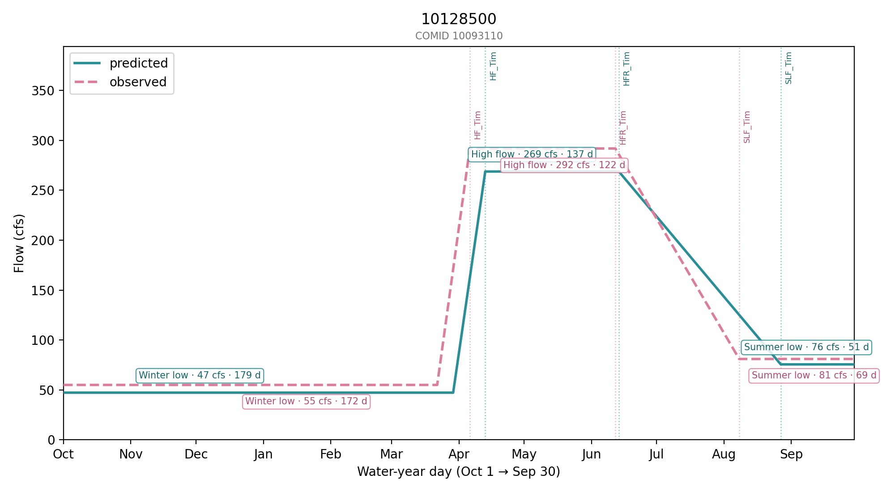

Projects
Selected work in rivers, hazards, and environmental data. Click a panel for the full story.

Great Salt Lake Functional Flows Explorer
Interactive maps of functional-flow metrics for ~2,500 stream segments feeding the Great Salt Lake.
Read more →SCAR: Satellite-based Classification of post-fire Alluvial Response
Building the empirical record that post-fire debris-flow risk models are missing — from orbit. Ongoing.
Read more →